Structure of a Decision Analysis
Decision Trees & Probabilities
Learning Objectives
Construct and solve a decision problem by calculating an intervention’s expected value across competing strategies in a decision tree
Determine the decision threshold across a range of scenarios
Differentiate between joint and conditional probabilities and demonstrate their use in decision trees
Recap: Decision Analysis
Aims to inform choice under uncertainty using an explicit, quantitative approach
Aims to identify, measure, & value the consequences of decisions (risks/benefits) & uncertainty when a decision needs to be made, most appropriately over time
Should I go to the beach or stay home?
Should I go to the beach or stay home?
Possible States of the World:
At the beach with no rain.
At the beach with rain.
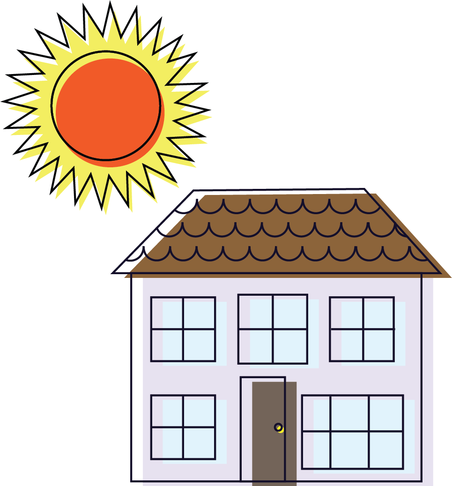
At home with no rain.
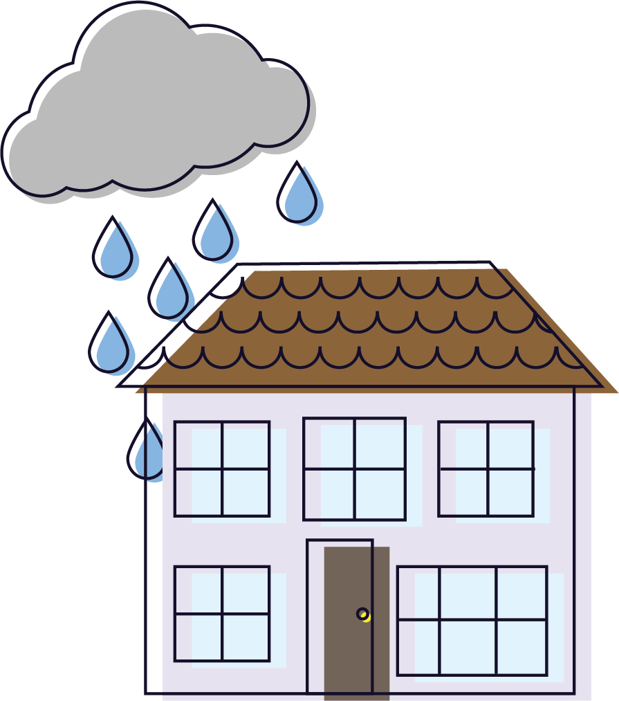
At home with rain.
Should I go to the beach or stay home?
Considerations:
Probabilities
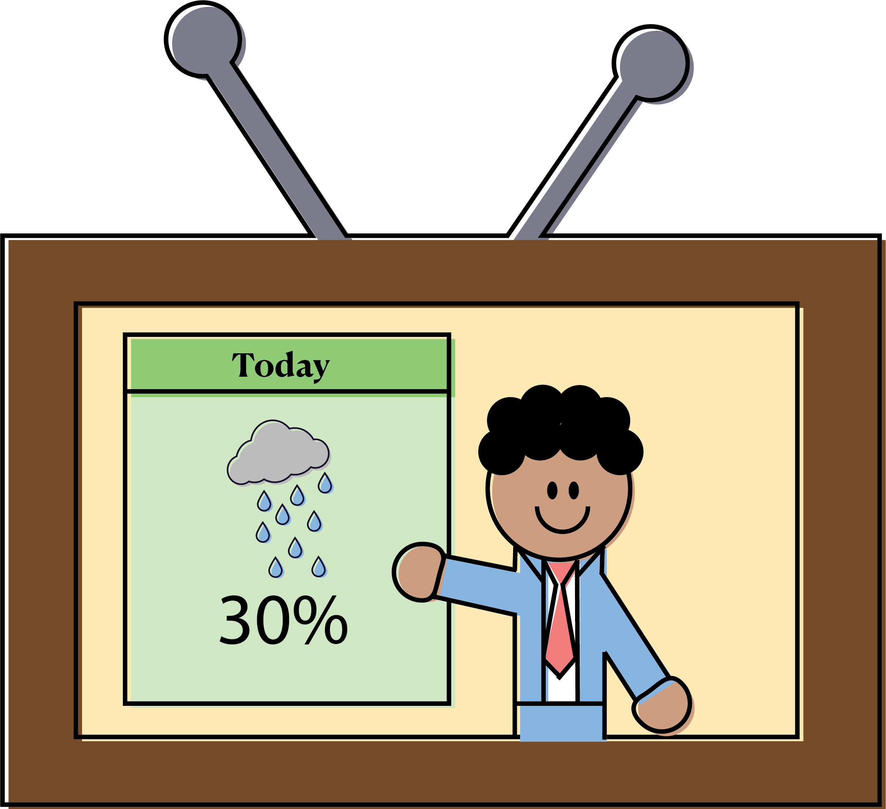
Likelihood of Rain
Payoff
My overall well being in each state.
Should I go to the beach or stay home?
Considerations:
Probabilities
Likelihood of Rain
Payoff
Mood when it is sunny at the beach
Payoff
Mood when it is raining at the beach
Payoff
Mood when it is sunny at home
Payoff
Mood when it is raining at home
Decision Trees
Square decision node
- Indicates a decision point between alternative options
Circular Chance Node
- Shows a point where two or more alternative events for a patient are possible
We start with a decision node – which just visually shows the decision point (so no probabilities are attached here)
From our decision node, we would then want to create chance nodes, or probability nodes, to model out the probabilities of our different options
The corresponding events from the chance nodes need to sum to 1 as per the “law of total probability”
Decision Trees
- Pathways are mutually exclusive sequences of events and are the routes through the tree.
- Probabilities show the likelihood of particular event occurring at a chance node.
Should I go to the beach or stay home?
Decision Tree:
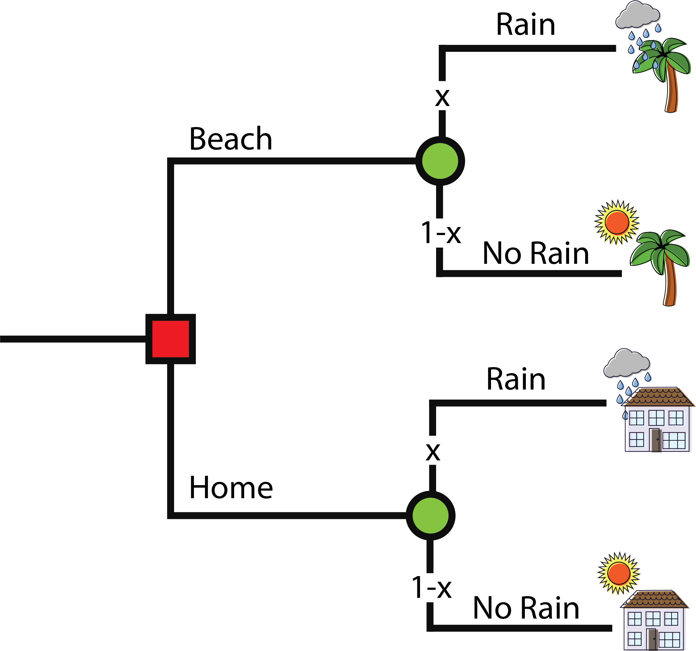
- The outcomes we care about for this model are RAIN versus NO RAIN, so we add that to the end of our branches, which represent the terminal nodes – or the end states of our model
Probability of rain = 30%
Should I go to the beach or stay home?
Decision Tree:
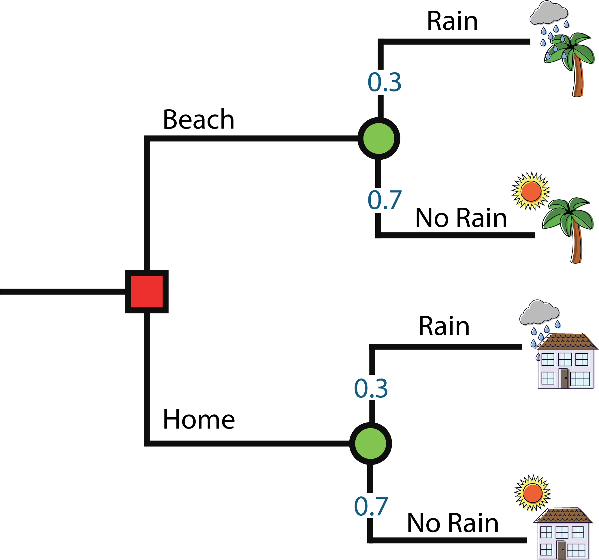
- The probability of rain is 30% - whether you stay home or go to the beach & we know that the branches have to add to 1 because of the law of total probability
- However, we aren’t done yet, as ***It would be helpful if we had some way to VALUE the outcomes – in terms of say, rain at the beach, versus if it rained at home, etc.
- **If you don’t place value on the different outcomes, then we are essentially saying that we value RAIN versus NO RAIN the same among the beach and home options
- But if I had to guess, this probably isn’t true unless you’re the type of person that likes rain at the beach just as much as rain at home)
Should I go to the beach or stay home?
Payoffs
| Scenario | Payoff |
|---|---|
| At beach, no rain | 1.0 |
| At beach, rain ↓ | 0.4 |
| At home, no rain ↑ | 0.8 |
| At home, rain ↑ | 0.6 |
| Scenario | Payoff |
|---|---|
| At beach, no rain BEST | 1.0 |
| At home, no rain | 0.8 |
| At home, rain | 0.6 |
| At beach, rain WORSE | 0.4 |
- We will get into this down the line, but utilities are measured between 0 and 1.
- For health states, for example, 0 = worst health & 1 = perfect health
- Here, we are valuing “beach, no rain” as the “most ideal state” we want to be in
Should I go to the beach or stay home?
Decision Tree:
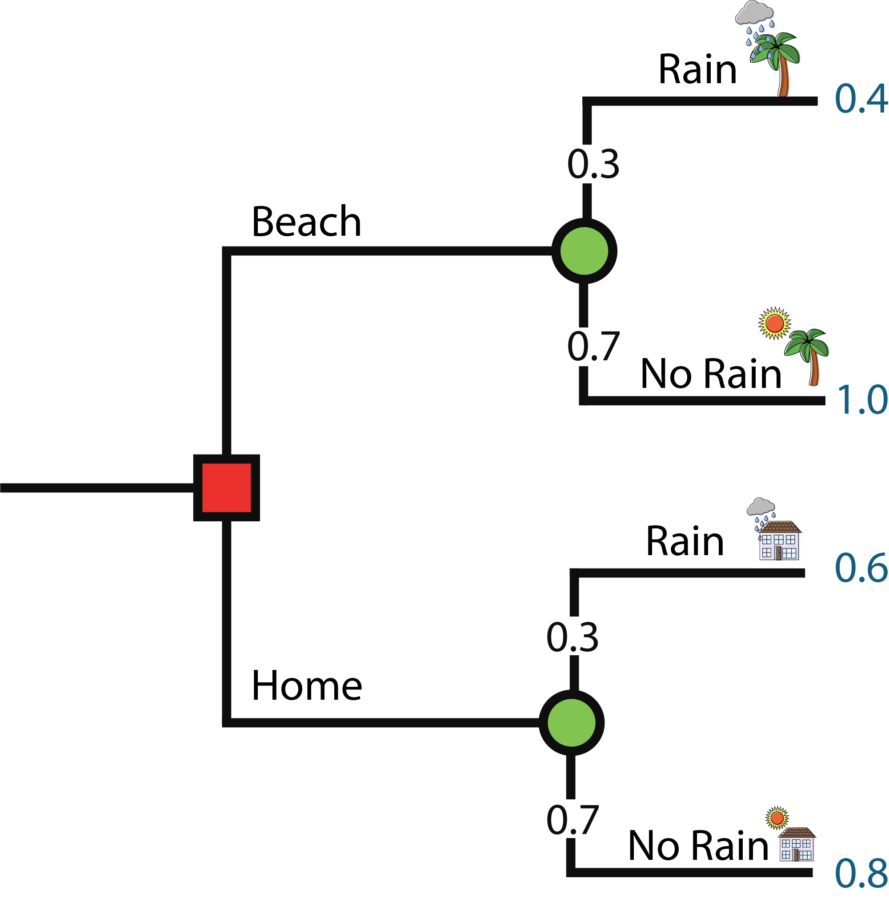
What is the expected value of going to the beach?
\(\color{green}{0.82} = \underbrace{\color{red}{0.3} * \color{blue}{0.4}}_{\text{Rain}} + \underbrace{\color{red}{0.7} * \color{blue}{1.0}}_{\text{No Rain}}\)
- Probabilities in red.
- Payoffs in blue.
- Expected value in green.
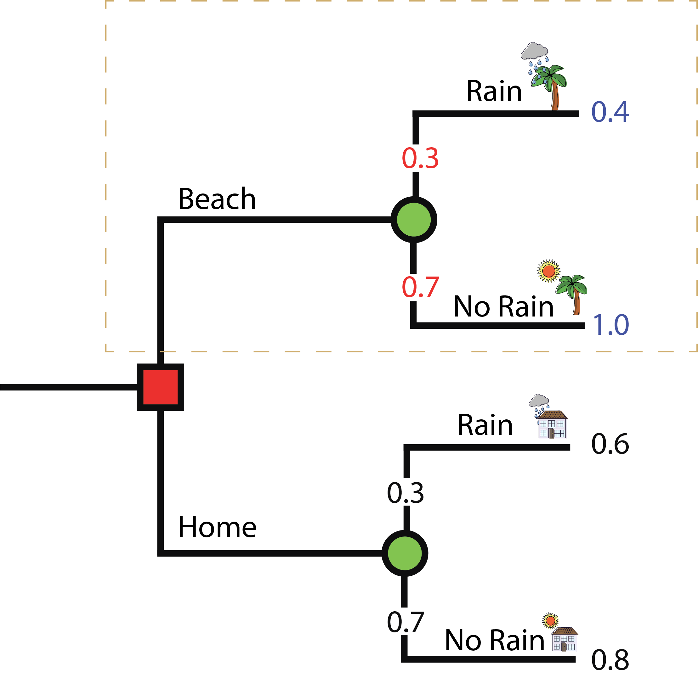
What is the expected value of staying home?
\(\color{green}{0.74} = \underbrace{\color{red}{0.3} \cdot \color{blue}{0.6}}_{\text{Rain}} + \underbrace{\color{red}{0.7} \cdot \color{blue}{0.8}}_{\text{No Rain}}\)
- Probabilities in red.
- Payoffs in blue.
- Expected value in green.
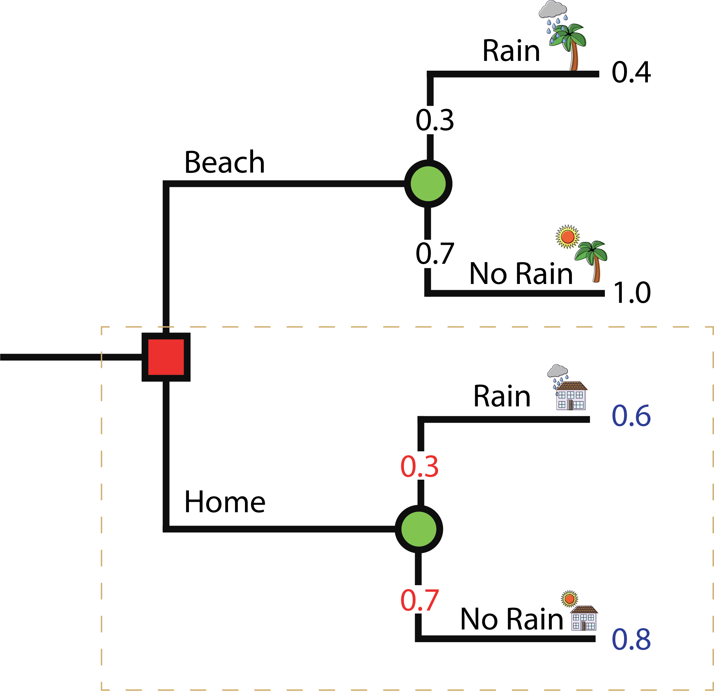
Expected Values
- Expected value = The sum of the multiplied probabilities for each chance option or intervention
Equation: 1 to infinity – represents the infinite # of branches in the decision tree. In our example, we only had 2 branches, but if you had 3 or 4 or 5… you would represent it as i=3, 4, 5 and then you multiply the probabilities.
Xi = payoff and P = probability
Expected Values
- The expected value within the context of decision trees are the “payoffs” weighted by their preceding probabilities
- What we get is: the result that is expected ON AVERAGE for any one decision alternative (e.g. length of life, quality of life, lifetime costs)
Example:
On average, patients given Treatment A will live 0.30 years (or 3.6 months [=0.30*12]) longer than patients given Treatment B
Maximizing expected value is a reasonable criterion for choice given uncertain prospects; though it does not necessarily promise the best results for any one individual
At what probability \(p\) are the two choices equal?
Suppose we want to know at what probability of rain \(p\) we are indifferent between going to the beach vs. staying at home…
Write the equation for each choice using a variable, p, for the probability in question
Set the equations equal to to one other and solve for p.
At what probability \(p\) are the two choices equal?
Beach: 0.82 = 0.3 x 0.4 + 0.7 x 1.0
Home: 0.74 = 0.3 x 0.6 + 0.7 x 0.8
At what probability \(p\) are the two choices equal?
\(\underbrace{0.3 * 0.4 + 0.7 * 1.0}_{\text{Beach}} = \underbrace{0.3 * 0.6 + 0.7 * 0.8}_{\text{Home}}\)
At what probability \(p\) are the two choices equal?
Replace probability of rain with P and 1-P and solve for “P”
p * 0.4 + (1-p) * 1.0 = p * 0.6 + (1-p) * 0.8
\(\underbrace{0.3 * 0.4 + 0.7 * 1.0}_{\text{Beach}} = \underbrace{0.3 * 0.6 + 0.7 * 0.8}_{\text{Home}}\)
At what probability \(p\) are the two choices equal?
p * 0.4 + (1-p) * 1.0 = p * 0.6 + (1-p) * 0.8
At what probability \(p\) are the two choices equal?
p * 0.4 + (1-p) * 1.0 = p * 0.6 + (1-p) * 0.8
0.4p + 1-p = 0.6p + 0.8 - 0.8p
1-0.6p = 0.8 - 0.2p
1-0.8 = 0.6p - 0.2p
0.2 = 0.4 * p
0.5 = p
At what probability \(p\) are the two choices equal?
When the probability of rain is 50% at BOTH the beach and home, given how we weighted the outcomes, going to the beach would be the same as staying at home
In other words, you would be indifferent between the two – staying at home or going to the beach; <50%, you would choose the beach.
At what probability (\(p_B\)) of rain for the beach are you indifferent between the two options?
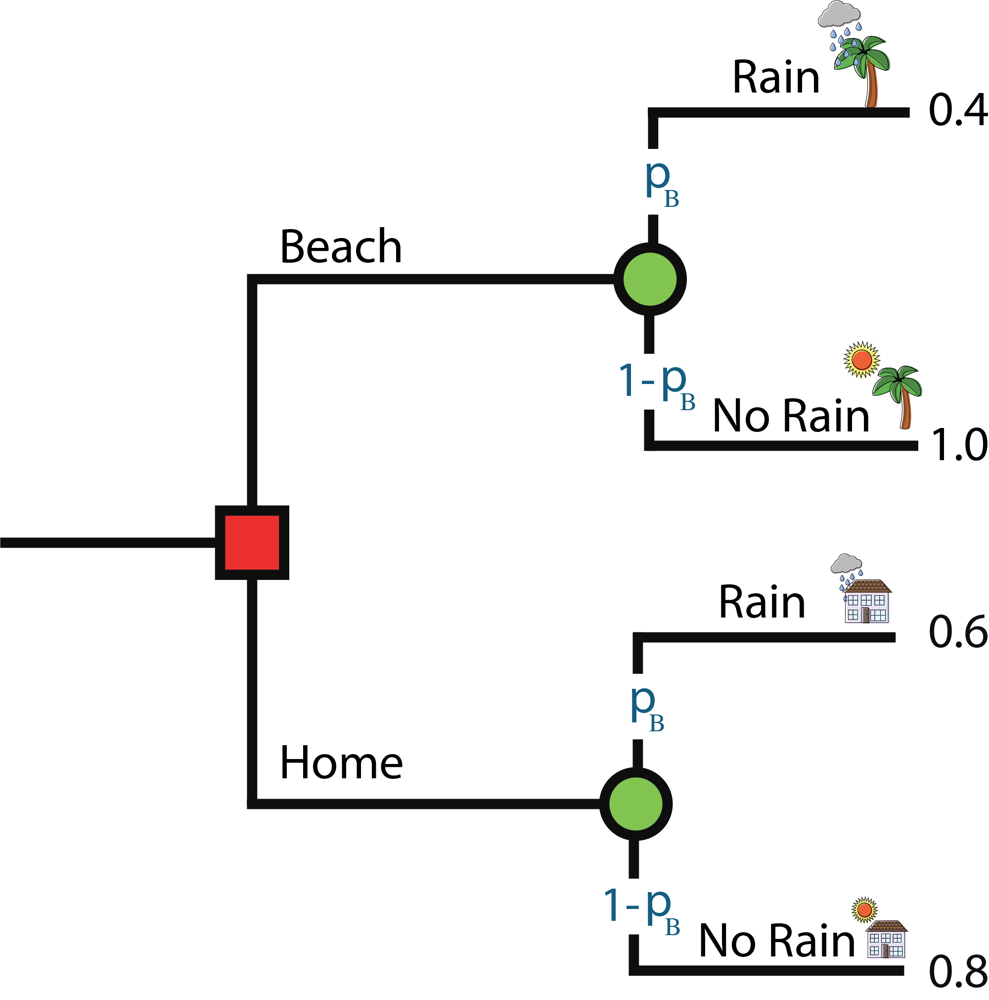
At what probability (\(p_B\)) of rain for the beach are you indifferent between the two options?
Earlier, we solved for the expected payoff of remaining at home:
0.74 (which was a lower expected value than going to the beach when the chance of rain at both was 30%)
- What would \(p_B\) need to be to yield an expected payoff at the beach of 0.74?
- We just solved for the indifference threshold assuming the probability of rain was the same at the beach and at home.
- Now we vary rain at the beach while keeping the probability of rain at home fixed at 30%.
- In other words, at what probability of rain at the beach would you be indifferent between staying at home & going to the beach?
- Now, let’s ask a slightly different question – At what probabiility….
- Let’s now assume that the probability of rain for the HOME option does not change (so stays at 0.3)
- KEY DIFFERENCE FROM THE LAST EXAMPLE: In the last example, the probabilities were the same & we wanted to get our threshold of indifference between the beach and staying at home
- **Now we are assuming that there’s still a probability of 30% that it rains if you stay home, but at what probability of rain at the beach would you be indifferent between the two options? (Since we CHOSE BEACH when the probabilities both equaled 30%)
- In other words, at what probability of RAIN AT THE BEACH would you be indifferent between the beach & home
At what probability (\(p_B\)) of rain for the beach are you indifferent between the two options?
Set 0.74 (expected value of remaining at home) equal to the beach payoffs and solve for \(p_B\), because we are varying the probability of rain at the beach (\(p_B\)), not the probability of rain at home (\(p_H\)).
pB * 0.4 + (1 - pB) * 1.0 = 0.74
At what probability (\(p_B\)) of rain for the beach are you indifferent between the two options?
pB * 0.4 + (1 - pB) * 1.0 = 0.74
pB * 0.4 + 1 - pB = 0.74
At what probability (\(p_B\)) of rain for the beach are you indifferent between the two options?
pB * -0.6 = -0.26
At what probability (\(p_B\)) of rain for the beach are you indifferent between the two options?
pB = -0.26 / -0.6 = 0.43
At what probability (\(p_B\)) of rain for the beach are you indifferent between the two options?
When the probability of rain at the beach is 43% (probability of rain at home remains at 30%), we would be indifferent between staying at home & going to the beach (because the EV would both = 0.74).
If the probability of rain at the beach in >43%, then we would stay home
Remember: when the probability of rain was 30% at both locations, we would choose the beach.
Mutually exclusive events
2 things that cannot occur together (one event cannot occur at the same time as the other event)
Examples:
- 2 events – survive or die
- 2 events – cured or not cured
Mutually exclusive events in Decision Trees
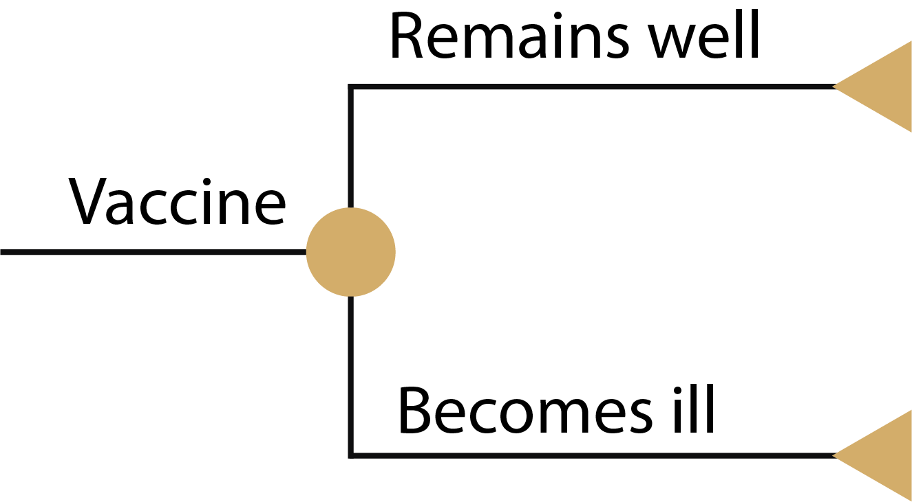
Mutually exclusive events
Assuming events are mutually exclusive, then the probability of 2 events occurring is the sum of the probability of each event occurring individually
\[ P(A or B) = P(A) + P(B) \]
This is what we do when summing pathways for a single decision
(e.g., Beach = rain or no rain; Home = rain or no rain).
Probabilities within Decision Trees
Joint probability
P(A and B): The probability of two events occurring at the same time.
Conditional probability
P(A|B): The probability of an event A given that an event B is known to have occurred.
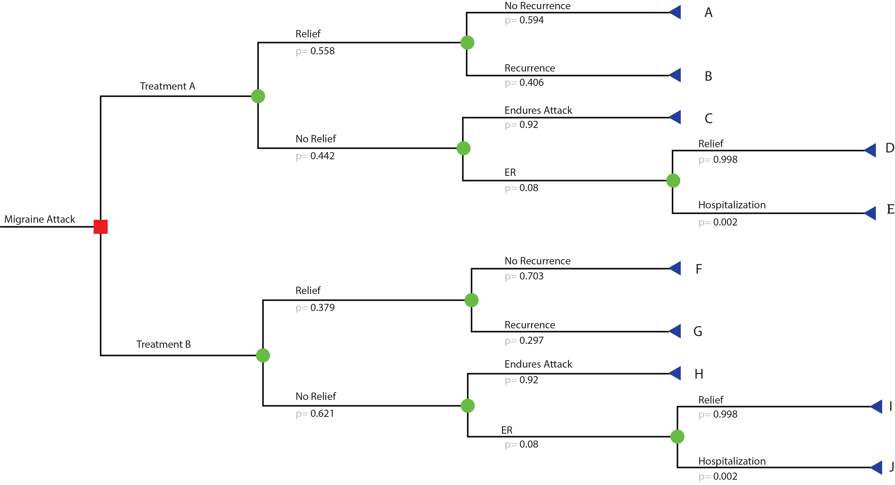
Probabilities
- Moving from left to right, the first probabilities in the tree show the probability of an event.
- Subsequent probabilities are conditional. The probability of an event given that an earlier event did or did not occur.
- Multiplying probabilities along pathways estimates the pathway probability, which is a joint probability.
Decision Tree
Pathways
A sequence of events that lead to a subsequent “pay off” In other words, a sequence of events leads to an outcome/consequence, or payoff.
Example:
Our beach example has 4 pathways; At home with sun, at home with rain, at the beach with sun, and at the beach with rain.
Pathways
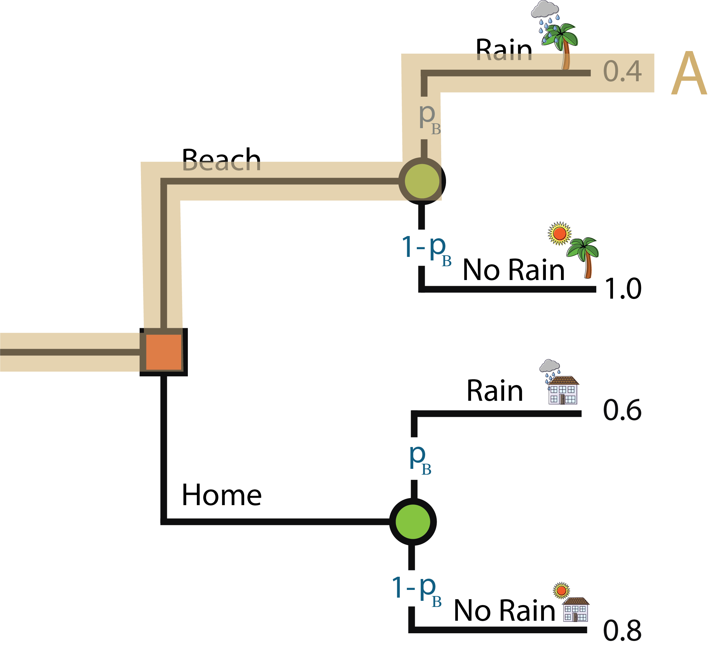
Pathway A: This person goes to the beach but it rains
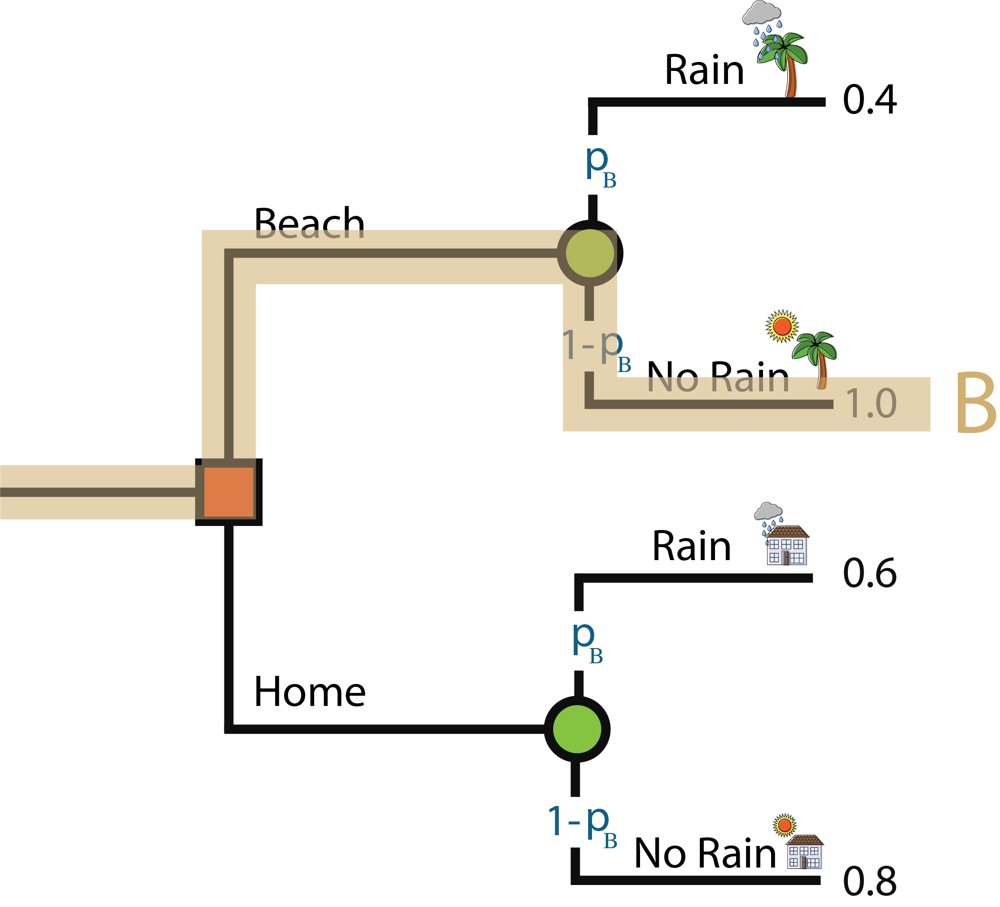
Pathway B: This person goes to the beach but there is no rain
Conditional probability
Probability of an event occurring (B) given that another event occurred (A) \[ P(A|B) = P(A and B) / P(B) \]
Example:
What is the conditional probability of death within a year of birth, given the infant has a mother who smokes?
Conditional probability, 2x2 review
What is the conditional probability of death within a year of birth, given the infant has a mother who smokes?
P(A|B)
= P(death in first year | mother who smokes)
= 16,712 / (1,197,142 + 16,712)
= 14 per 1,000 births
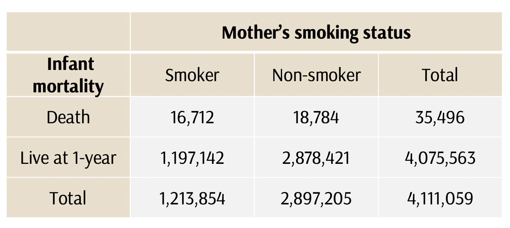
Conditional probability, 2x2 review
Or, if we wanted to use the conditional probability equation
P(A|B) = P(A and B)/P(B)
*A= death in first year; B=mother who smokes
P(A and B) = 16,712 / 4,111,059 = 0.0041
P(B) = 1,213,854/4,111,059 = 0.295
P(A|B) = 0.0041/0.295 = 0.014
Conditional probability, A|B vs B|A
Probability of A|B is different from that of B|A
If A = death in first year; B=normal birth weight infant,
THEN, the conditional probability of P(A|B) = the probability of an infant death, given that the child has a normal birth weight
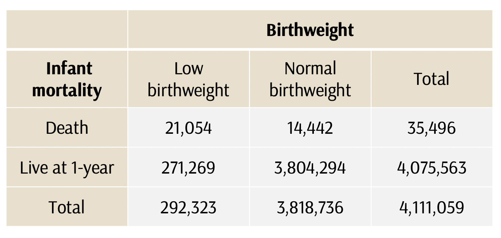
Conditional probability, A|B vs B|A
What is the conditional probability of an infant death, given that the child has a normal birth weight?
If A = death in first year; B=normal birth weight infant
P(A|B)
= 14,442 / (14,442+ 3,804,294)
= 3.8 deaths per 1,000 births
Conditional probability, A|B vs B|A
Or, if we wanted to use the conditional probability equation
P(A|B) = P(A and B)/P(B)
P(A and B) = 14,442
P(B)= 3,818,736
P(A|B) = 14,442/3,818,736 = 0.0038
* A= death in first year; B=normal birth weight infant
Conditional probability, A|B vs B|A
On the other hand, the conditional probability of P(B|A) is the probability that an infant had normal birth weight, given that the infant died within 1 year from birth
*B=normal birth weight infant; A = death in first year
Conditional probability, A|B vs B|A
Probability of A|B is 3.8 deaths per 1,000 births
Solve P(B|A) – the probability that an infant had normal birthweight, given that the infant died within 1 year from birth
P(B|A)
= 14,442 / (14,442+ 21,054)
= 0.41
4.1 normal birthweights of 1,000 baby deaths within 1 year from birth
*B=normal birth weight infant; A = death in first year
Decision Philosophies
Maximizing expected value is a reasonable criterion for choice given uncertain prospects; though it does not necessarily promise the best results for any one individual.
Mini-max regret
- Never go to the beach unless 0% rain.
Maxi-max
- Always go to the beach unless 100% rain.
Expected utility
- Depends on the weather.
Let’s quickly touch on decision philosophies when it comes to preference weighting. There are different levels of risk aversion & there are different decision philosophies for these behaviors
Mini-max regret philosophy essentially means that you would never go to the beach unless there was 0% rain
- For instance, physicians may be risk averse & therefore minimize max regret
(3)(a) Maxi-max gain is the reverse – where you would always go to the beach unless there was 100% rain – you are risk seeking – you love the beach so much that you’re going to give it a try.
(3)(b) Another example of this in a medical context – is the desperate patient example – you’re going to die anyways, so we are going to give you this treatment, but it has nasty side effects – cancer – chemotherapies – even bone marrow transplants, 2nd or third line – a high probability of bad outcome but if you do nothing then you’re going to die.
- If you’re going to base your decision on expected utility, then your decision depends on the weather & how much value you give to certain outcomes – this is the rationale thinker approach – how much you value sitting at home weighed by the utility loss of not having the beach experience, for example.
Payoffs
- Each state of the world is assigned a cost or outcome.
- Our goal is often to calculate the expected value of these payoffs.
We’ll cover more on the theories and frameworks underlying various payoffs in the next few lectures
Strengths/limitations of decision trees
Strengths
- They are easy to describe and understand
- Works well with limited time horizon
- Decision trees are a powerful framework for analyzing decisions and can provide rapid/useful insights, but they have limitations.
Limitations
- No explicit accounting for the elapse of time.
- Recurrent events must be separately built into model.
- Fine for short time cycles (e.g., 12 months) but we often want to model over a lifetime.
- Difficult to incorporate real clinical detail - Tree structure can quickly become complex.
Some Do’s & “Dont’s”
- Balance risks and benefits
Each strategy must include all relevant risks and benefits.
If one option carries only risks or only benefits, either the model is misspecified or the clinical problem does not require a decision analysis (the decision would be “obvious” in the latter case).
Some Do’s & “Dont’s”
- 2 branches versus 3
There is nothing inherently wrong with having three (or more) branches, as long as events are mutually exclusive and probabilities sum to 1.
However, additional branches increase model complexity and can complicate sensitivity analyses without necessarily adding insight.
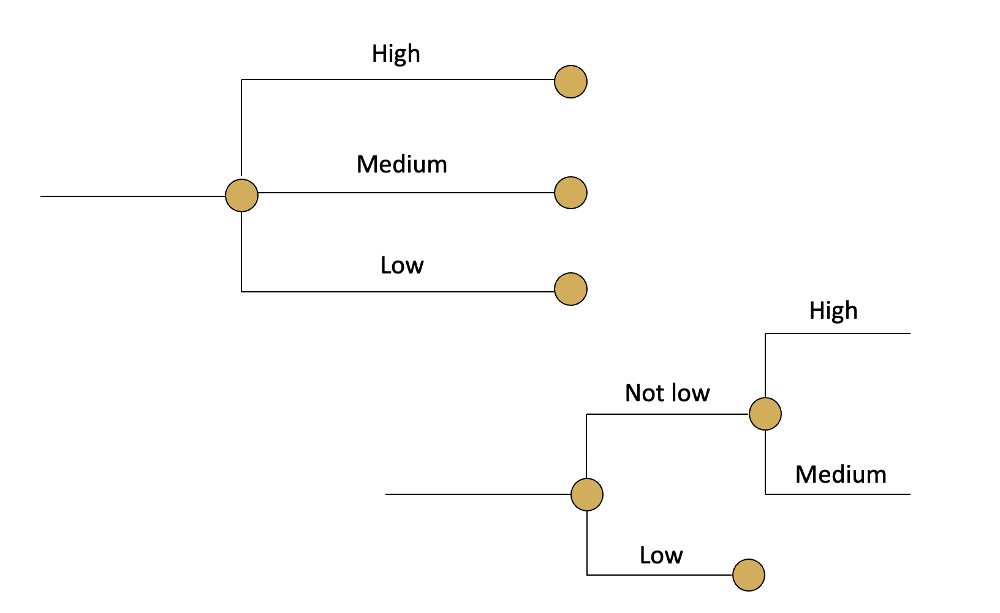
Some Do’s & “Dont’s”
- No embedded decisions
Each decision tree should address a single decision problem.
Embedding multiple decisions (e.g., screening and downstream treatment choices) complicates interpretation and validation.
Preview of what’s to come
More complex trees!
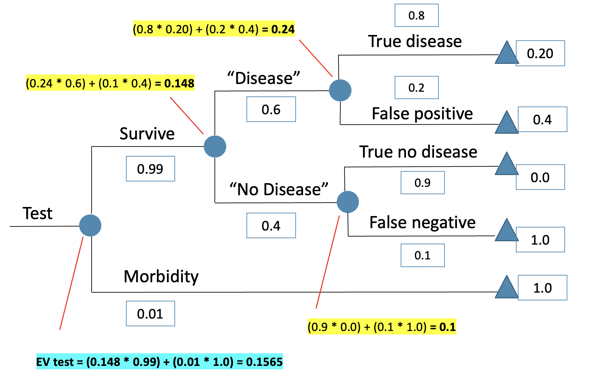